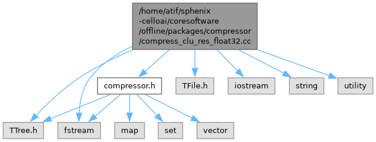
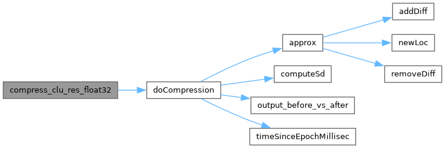
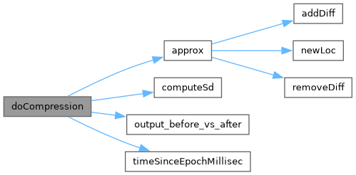

compress_clu_res_float32.cc File Reference
#include "compressor.h"#include <TFile.h>#include <TTree.h>#include <iostream>#include <fstream>#include <string>#include <utility>
Include dependency graph for compress_clu_res_float32.cc:

Functions | |
| void | doCompression (std::ofstream &myfile, const TString &filename) |
| Compresses track residual data from a ROOT file and records compression metrics. | |
| Float_t | computeSd (Float_t *avg, Int_t n_entries, TTree *t, const Float_t *gen_) |
| Compute standard deviation of generator values from a TTree. | |
| void | output_before_vs_after (const TString &filename, std::vector< UShort_t > *order, std::vector< Float_t > *dict, Int_t n_entries, TTree *t, const Float_t *gen_) |
| Write before after values to a CSV file. | |
| uint64_t | timeSinceEpochMillisec () |
| Return current time since epoch in milliseconds. | |
| void | compress_clu_res_float32 (std::string &filename) |
| Compress cluster resolution data stored as float32 in the specified file. | |
Function Documentation
◆ compress_clu_res_float32()
| void compress_clu_res_float32 | ( | std::string & | filename | ) |
Compress cluster resolution data stored as float32 in the specified file.
- Parameters
-
filename path to the input file to be compressed This comment was generated by openai/gpt-oss-120b at temperature 0.1.
Here is the call graph for this function:

◆ computeSd()
| Float_t computeSd | ( | Float_t * | avg, |
| Int_t | n_entries, | ||
| TTree * | t, | ||
| const Float_t * | gen_ ) |
Compute standard deviation of generator values from a TTree.
- Parameters
-
avg pointer to store computed mean n_entries number of entries to process t pointer to TTree containing entries gen_ pointer to generator value within each entry
- Returns
- standard deviation of generator values This comment was generated by openai/gpt-oss-120b at temperature 0.1.
Here is the caller graph for this function:
◆ doCompression()
| void doCompression | ( | std::ofstream & | myfile, |
| const TString & | filename ) |
Compresses track residual data from a ROOT file and records compression metrics.
Using 16-bit short integers to store 32-bit floating-point values. Joint work with Massachusetts Institute of Technology (MIT) and Institute for Information Industry (III) Questions please contact fishy.nosp@m.u@ii.nosp@m.i.org.nosp@m..tw Date: May 22, 2021
- Parameters
-
myfile Output CSV file stream filename Input ROOT file name containing the ntp trkres tree
- Returns
- None This comment was generated by openai/gpt-oss-120b at temperature 0.1.
Here is the call graph for this function:

Here is the caller graph for this function:
◆ output_before_vs_after()
| void output_before_vs_after | ( | const TString & | filename, |
| std::vector< UShort_t > * | order, | ||
| std::vector< Float_t > * | dict, | ||
| Int_t | n_entries, | ||
| TTree * | t, | ||
| const Float_t * | gen_ ) |
Write before after values to a CSV file.
- Parameters
-
filename name of the output file order pointer to vector of indices defining order dict pointer to vector of float values n_entries number of entries to process t pointer to input TTree gen_ pointer to generated float value This comment was generated by openai/gpt-oss-120b at temperature 0.1.
Here is the caller graph for this function:
◆ timeSinceEpochMillisec()
| uint64_t timeSinceEpochMillisec | ( | ) |
Return current time since epoch in milliseconds.
- Returns
- Milliseconds since Unix epoch This comment was generated by openai/gpt-oss-120b at temperature 0.1.
Here is the caller graph for this function:
Generated by